Bachelor of Computer Science · Nearly two decades in game development · Since 1982
Started on a Commodore 64. Built games in C++ from indie to large studios. Contributed to Debian and Ubuntu. Designed ERP systems for small businesses. Hacked together tools that scratch real itches. I open-source what I can - some projects are under NDA, the rest live below.
CS graduate from Argentina. Linux power user and contributor to Debian, Ubuntu, Mint, and other global repositories. Fluent in English and Spanish. Passionate about releasing source code to the community - if it helps you, it was worth building.
My work spans game engines written at age 16 to ERP systems deployed in Buenos Aires, a GUI operating system that fits on a floppy disk, and a guitar tool with 4000+ scales. Low footprint, high craft.
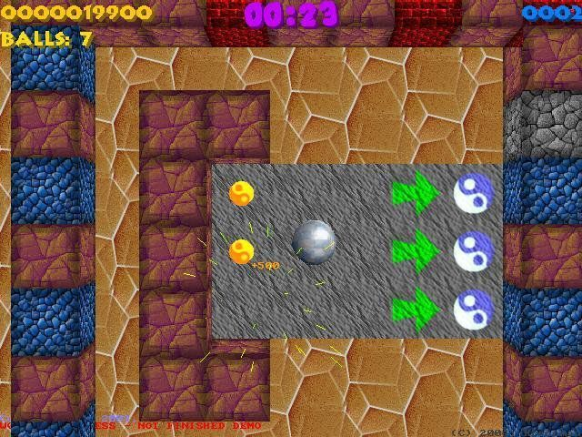
Skill & reflex game - steer the ball through the level without falling, beat the clock, collect prizes. Full map editor included. Cross-platform: DOS, Linux, Windows. Won at the 2004 UTN/ADVA match. Also available from Ubuntu and Debian repos.
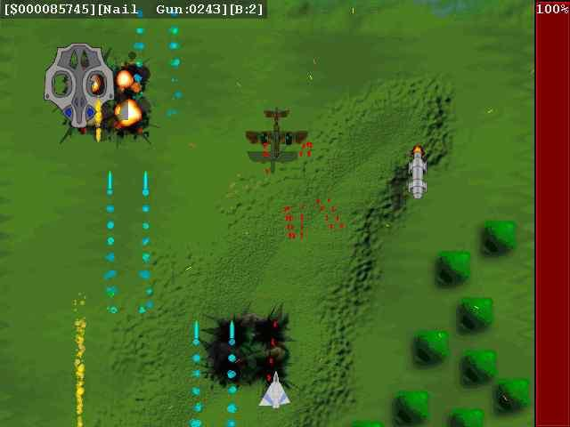
Old-school vertical scrolling space shooter. Fight through waves of enemies, collect powerful weapons, survive varied high-speed levels. Works on DOS, Linux, Windows - available in Ubuntu and Debian repos.
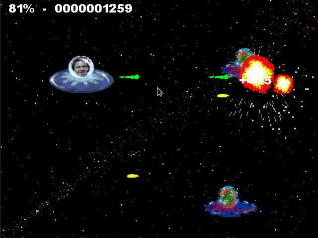
A gift game made from scratch in about a week for a friend. All graphics, sound, and music done by hand. Features a very interesting particle and explosion engine. A work of friendship with real craft behind it.
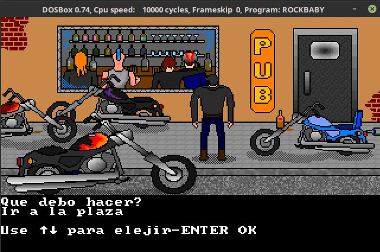
Not just a LucasArts-style game - a full engine with its own scripting language for creating graphic adventures. Coded on a 486, inspired by Full Throttle, Loom, Day of the Tentacle. Two complete adventures to play. Run with DOSBOX.
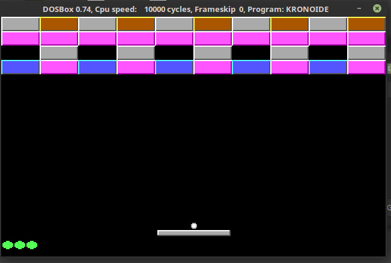
A Breakout / Arkanoid clone, built for fun and nostalgia. Classic brick-breaking action. Play it with DOSBOX.
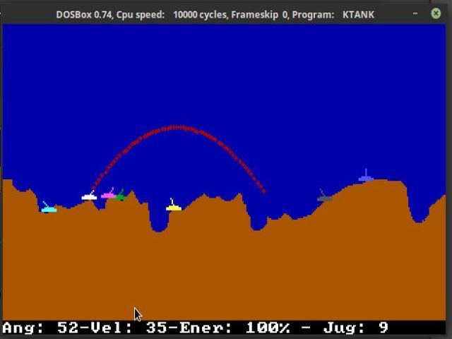
Artillery game for up to 10 players. Set angle and power, destroy your opponents. Randomly generated destructible terrain, multiple environments, hot-seat multiplayer. Play via DOSBOX.
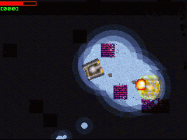
Tank battle for 2 players - split-screen, hot-seat or vs computer. Weather effects (rain, snow, fog, sandstorm), power-ups (shield, radar, repairs), destructible terrain, huge random maps.
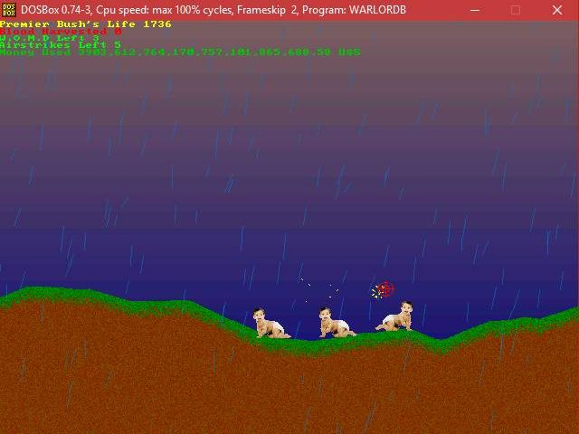
Evil shooting action built in exactly 24 hours for SpeedHack 2007 - and won "most evil game" that year. Speed-coded in C++, full gameplay included.
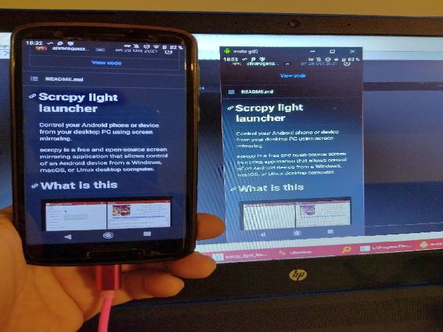
Control your Android phone from your desktop via screen mirroring. A very light, very fast, open-source alternative to bloated apps that drag in a million dependencies to do simple things.
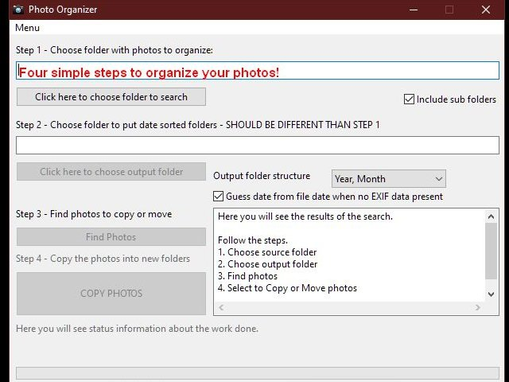
Sorts local photo backups into year/month/day folders using EXIF data. Automatically detects the original capture date from photos and videos - no cloud required, no subscriptions.
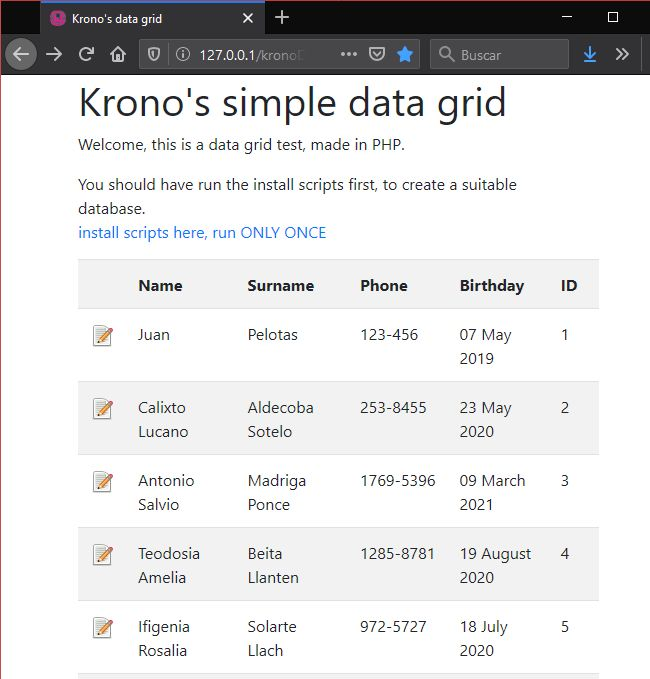
A featherweight PHP/MySQL data grid built because every other option was bloated or expensive. Includes an editable grid, a random name/surname generator, and a lightweight MySQL connection wrapper.
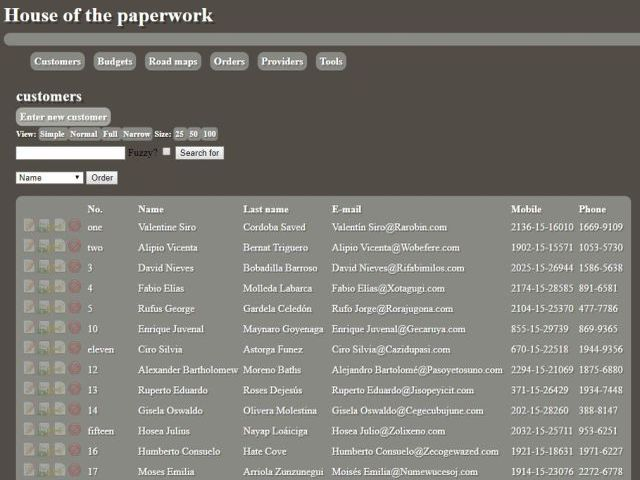
100% hand-built ERP for small Buenos Aires companies - clients, reports, orders, receipts, purchase orders, payroll. Built with PHP, MySQL, Linux/Apache. A practical open-source alternative to SAP and Oracle at SME scale.
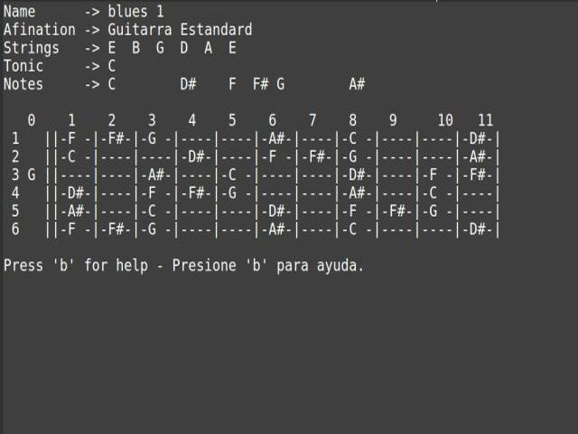
All-in-one helper for string instrument players. 4000+ scale types, 60+ chord types, 60+ instruments (guitar, bass, banjo, sitar, ukelele, and many more). Can auto-generate solos and learning exercises. Extremely low footprint.
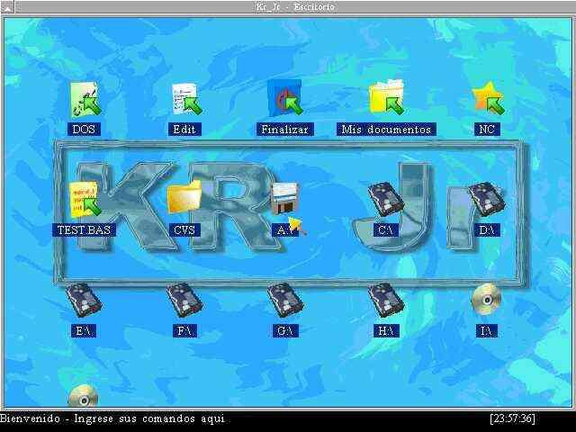
A GUI operating system for old computers. Working desktop, working boot, runs MS-DOS software. Inspired by micro-kernels like QNX but 100% original code. Fits on a floppy, runs on a 386 with 1 MB RAM and no hard drive.
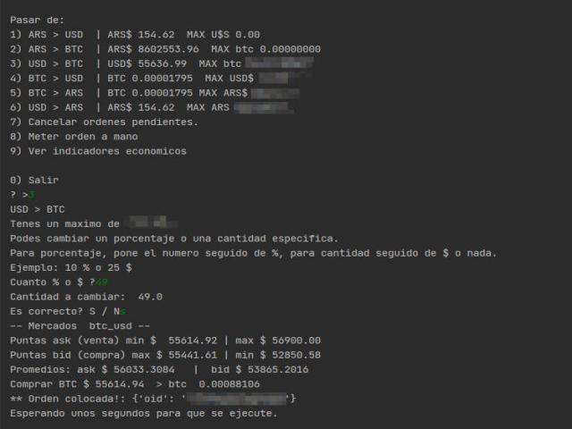
Command-line currency converter and crypto tool using Bitso. Place buy/sell orders, check ARS/USD rates, monitor economic indicators - faster than opening the app. My answer to Argentina's hyperinflation.
A practical guide to repairing computers for friends and family. Written by "the tech guy" - a CS grad who's been the family IT department for years. Embraces the DIY ethos that's quietly disappearing.
Personal reference notes for full-stack development - links, tools, and things that have proven genuinely useful in practice. Written for self-reference, shared freely for everyone else.
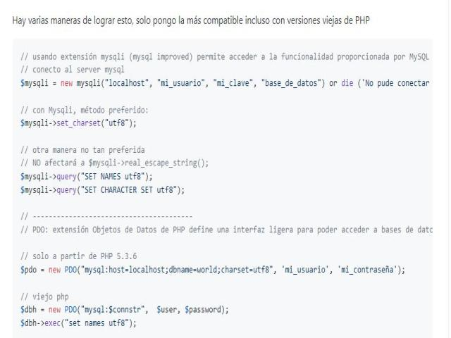
How to correctly store Spanish special characters in MySQL - fixing the classic "Rubén" encoding nightmare. A common pain point explained clearly. In Spanish.
All notes from a Bachelor of Computer Science at UADE, Argentina. Released for future students and colleagues. I'm always ready to share knowledge and help the next generation. In Spanish.
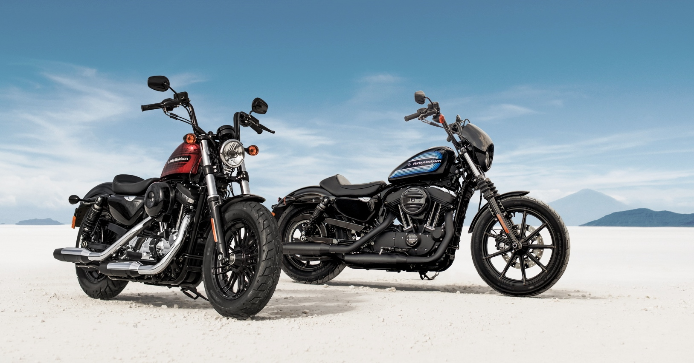
Alternative parts list for Harley Davidson Sportster owners in Argentina - compiled over 16+ years of keeping a bike running through import bans. Started in 2004 with an XL883. In Spanish.
Building this software takes real time, effort, and research. If something I've made has helped you, you're welcome to hire me or send a small BTC donation - even pennies help and everything is appreciated.
Bitcoin · Any amount welcome · Thank you